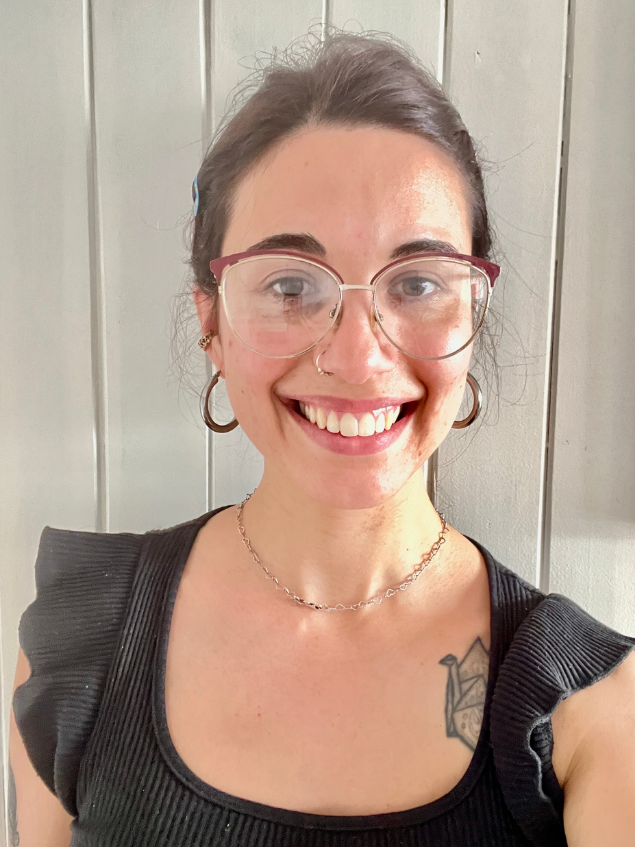

01 · QUIÉN SOYConozco el otro lado de la pantalla.
¡Hola! Mi nombre es Lucía Snieg. Soy de Ramos Mejía, conururbano de la Prov. de Buenos Aires. Llegué a la Tecnología Educativa desde la educación especial, las instituciones, las aulas, los equipos y el acompañamiento cotidiano.
Soy MAESTRANDA EN PROCESOS EDUCATIVOS MEDIADOS POR LA TECNOLOGÍA
UNC · en proceso de tesis
Soy Licenciada y Profesora de Educación Especial. Mi recorrido pasó por escuelas, centros de día, espacios de formación, equipos de orientación, instituciones de nivel superior y proyectos vinculados con accesibilidad y tecnologías educativas.
Con el tiempo fui encontrando una pregunta que atraviesa todo lo que hago:
¿Qué necesita una persona para poder participar?
Abrí cualquiera de las fichas del mural para conocer el resto del recorrido.